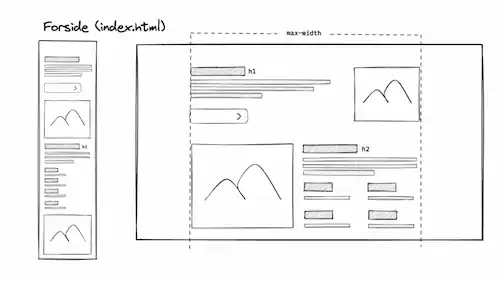
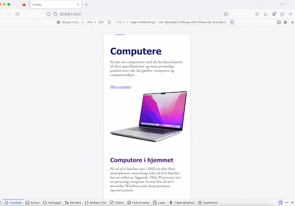
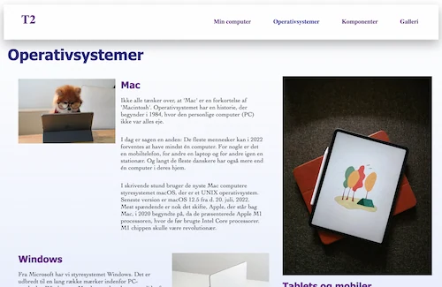

studiestartsprøve

I dette projekt blev vi introduceret til html og css, hvor jeg for første gang prøvede mig med kodning. Projektet lød på at vi skulle lave vores første website.
Med det materiale vi fik udleveret, skulle vi samle sitet ved brug af layoutdiagram som vi implementerede i HTML, samtidig med at vi brugte css til design.

For at fuldføre opgaven brugte jeg:
HTML, CSS, Adobe Photoshop
Forsiden til studiestartsprøve.

Andvendelse af formater tilpassende web. For eksempel brug af .webp format til billeder.

Vi lærte at bruge css at style elementer. Dette er elementer som de forskellige typer tekst, eller f.eks. knapper.

Vi var introduceret til grid.
Process

I dette tema lærte vi at bruge wireframes og layoutdiagram som grundlag for kodning. Det var også her, jeg startede min proces.
Derefter gik jeg i gang med at kode mobilsitet baseret på det udleverede wireframe og layoutdiagram.
Efterfølgende begyndte jeg at kode desktopversionen og eksperimenterede også med CSS for at forbedre det visuelle udtryk.
